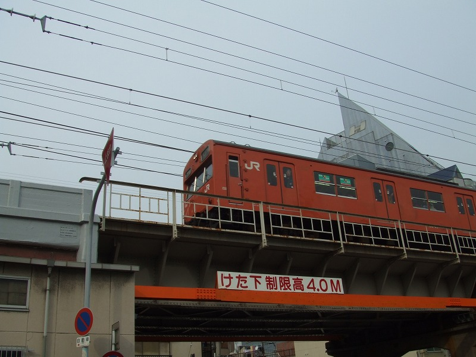
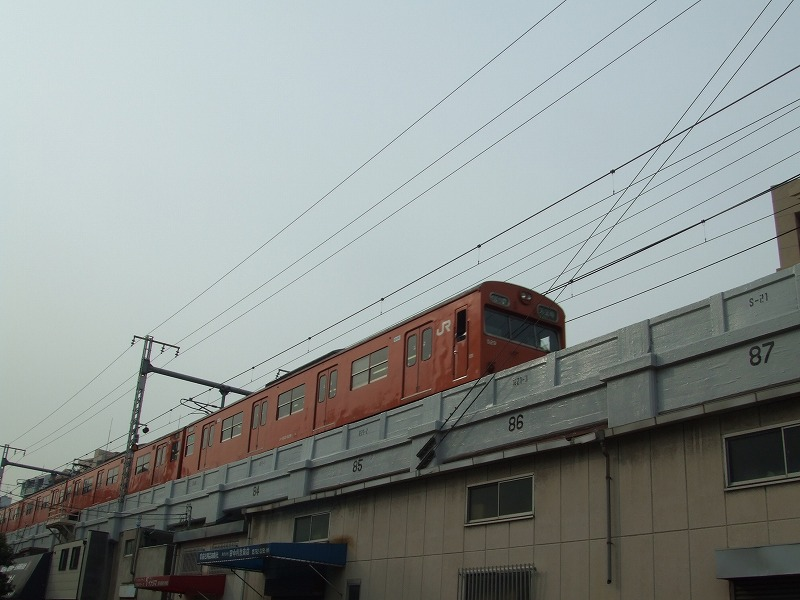
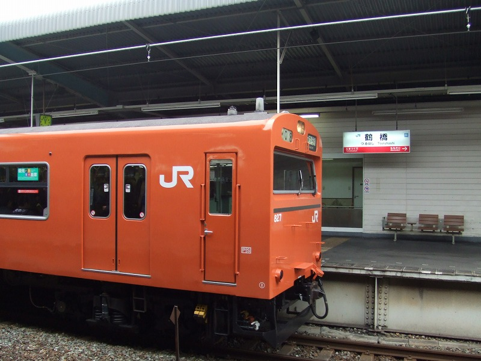
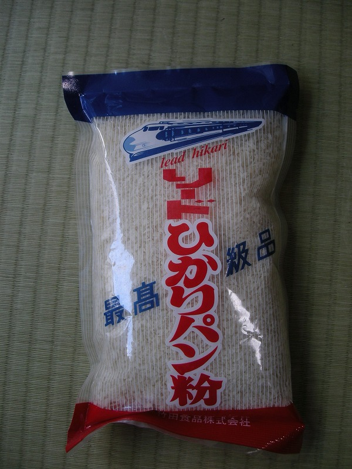

尼から「黒潮乗るために環状線半周したが103あまり見なかったよ」という鉄分100%のメールがウチに来ました。
こんなん同僚に見られたらウチ鉄に思われまんがな。
北京と尼に突き動かされ、あちこちでカメラを構えてます。かわいそうなアタシ。。

大阪を一人で散策中。玉造あたりで路上で数本待って撮影。

さっきの車両の後姿。この中年女は何やってんでしょうな。

帰りは鶴橋から電車で帰宅。ああ車両全部フレームに入れなきゃいけないんだっけ
前置きはコレぐらいにして、今回のメインはこちら。
天満市場の馴染みの乾物屋で「おいちゃん、パン粉ちょうだい」というとコレが出てきます。（値段:110万円)

いつまであるんだろう、この商品。。
都島